Autoevaluación
Componentes físicos de un ordenador actual
Documento completo de estudio técnico y arquitectura de hardware.
Índice #
(Actualiza este campo haciendo clic derecho -> Actualizar campos)
1.- Componentes físicos de un ordenador actual. #
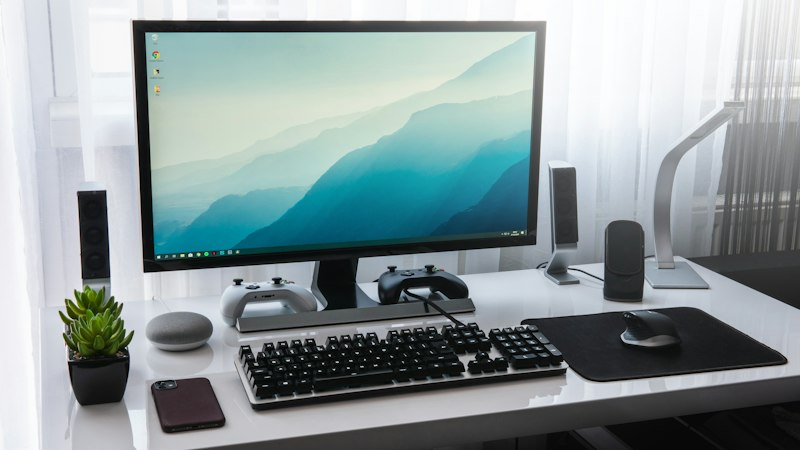
La arquitectura de un ordenador define la estructura funcional de cada una de sus partes, pero se hace necesario implementar dicha estructura mediante hardware de fabricación y comercialización actual.
La imagen que normalmente se tiene de un ordenador es la de una carcasa, con un diseño más o menos bonito, a la que están conectados como mínimo un teclado, un ratón y un monitor. El ordenador en sí está dentro de la carcasa y está constituido por la placa base, el procesador y la memoria. El resto de elementos que contiene son los periféricos que nos permiten comunicarnos con él, como la tarjeta gráfica, la de sonido, o las unidades de almacenamiento como el disco duro o el lector de DVD.
Claro que también podemos pensar en un portátil, pero este no deja de ser un ordenador con todos sus componentes, de reducido tamaño, integrados en su interior.
Así, en función de las características tecnológicas de los componentes empleados en su construcción (su tamaño, su grado de miniaturización, su capacidad de proceso, su capacidad de almacenamiento, su velocidad de proceso, su velocidad de transmisión, etc.) se van a construir ordenadores personales más o menos potentes: portátiles, tabletsPC, PDAs, smartphones y hasta consolas de videojuegos. Pero también se fabrican servidores, mainframes y, por supuesto, superordenadores.
Vamos a hacer un estudio de los distintos elementos utilizados para el montaje de un ordenador personal de escritorio de uso general (por ser la arquitectura más accesible), en base a los componentes físicos que se fabrican y se comercializan en la actualidad, analizando en la medida de lo posible sus características de funcionamiento particulares.
Los distintos componentes deben seguir determinados estándares de fabricación, sobre todo en lo relativo a sus conexiones e interfaces, para permitir su completa integración en el sistema y mantener la compatibilidad de funcionamiento entre ellos.
La base sobre la que se asienta el montaje de un ordenador personal es la placa base. A ella se conectan de una u otra forma, a través de los buses de interconexión, todos y cada uno de sus componentes. Las líneas de suministro eléctrico, procedentes de la fuente de alimentación, proporcionan corriente continua para su funcionamiento.
Como la mayoría de estos componentes necesitan de un recipiente a modo de envase que los contenga y los proteja, se han diseñado para ello las cajas de ordenador, también conocidas como carcasas.
1.1.- Cajas/carcasas de ordenador. #
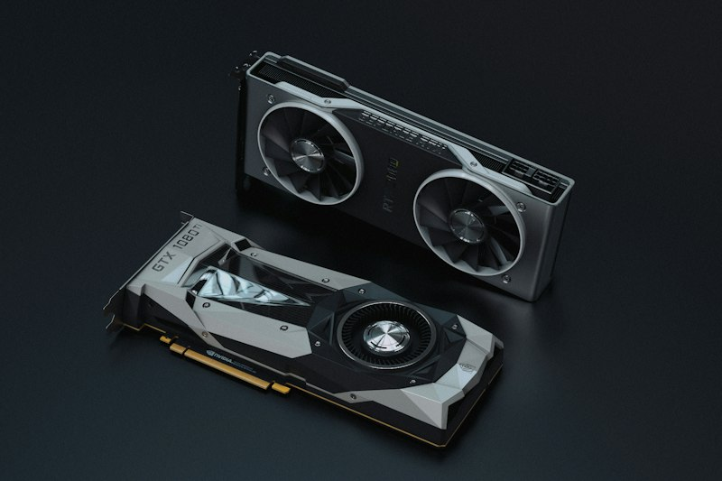
Las cajas o carcasas de ordenador se fabrican de diversos materiales como acero, aluminio, plástico, metacrilato, etc. o con una combinación de ellos. Deben tener la suficiente resistencia para aguantar tanto el peso de los componentes que se coloquen en su interior, como el calor que generen, y por supuesto la suficiente capacidad como para poder albergarlos con una distribución adecuada.
Estas cajas se fabrican siguiendo unos diseños basados en unos factores de forma estándares cada uno de los cuales tiene definidas sus propias características de tamaño, forma, capacidad, etc., para adaptarse a las placas base que se instalarán en ellas. Así que podemos elegir alguno de entre los distintos formatos de caja más habituales en la actualidad:
- Minitorre o semitorre: La diferencia entre ellas está en su altura que depende del número de bahías de 5 pulgadas y cuarto de que disponga. A mayor número de bahías más dispositivos podrá contener y más aumenta su altura. Suelen tener 2 y 4 bahías respectivamente. En la actualidad es común que las torres no tengan bahías externas, ya que cada vez se usan menos los lectores de discos ópticos y de disquetes/tarjetas de memoria.
- Sobremesa: Son similares a las minitorres, pero se colocan de forma horizontal, lo que obliga a rotar 90 grados los dispositivos extraíbles de su frontal.
- Barebone y slim: Son cajas de pequeño tamaño diseñadas sobre todo para ocupar poco espacio. Esto conlleva que su interior admita pocos dispositivos, o ninguno, pero esto se intenta compensar aumentando el número de conectores para dispositivos externos.
Con independencia de su forma o tamaño, de una carcasa se espera que en su interior contenga ciertos compartimentos dedicados a alojar la fuente de alimentación, los discos duros, las unidades ópticas y por supuesto la placa base y las tarjetas de expansión que se le conecten.
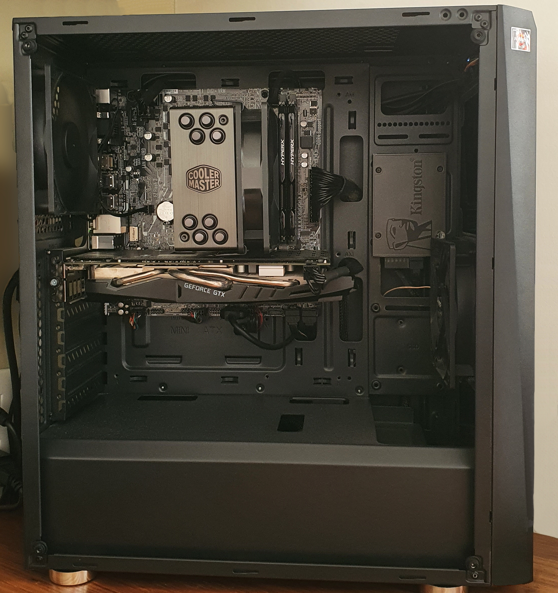
En el panel frontal se sitúan los botones de encendido y reinicio y los LED que indican si el ordenador está encendido o si se está utilizando el dispositivo de almacenamiento principal. También las bocas de las unidades extraíbles y algunos conectores externos de uso habitual, como los USB o conectores de audio.
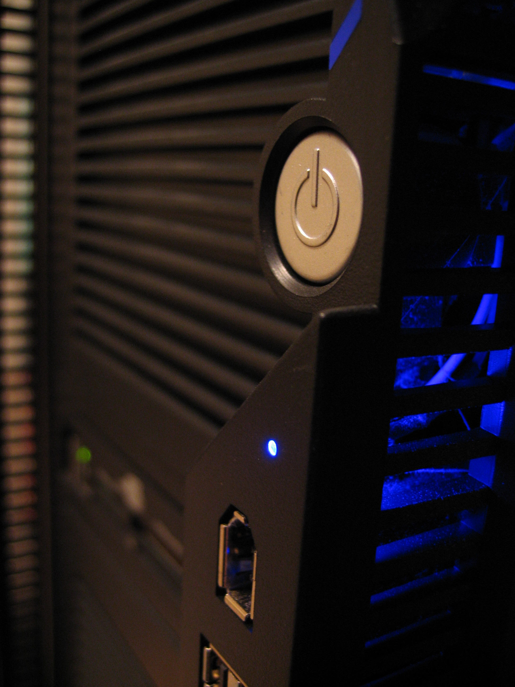
En la parte trasera se pueden ver los conectores que asoman directamente desde la placa base y desde las tarjetas de expansión, así como la toma de corriente eléctrica y la salida de ventilación de la fuente de alimentación.
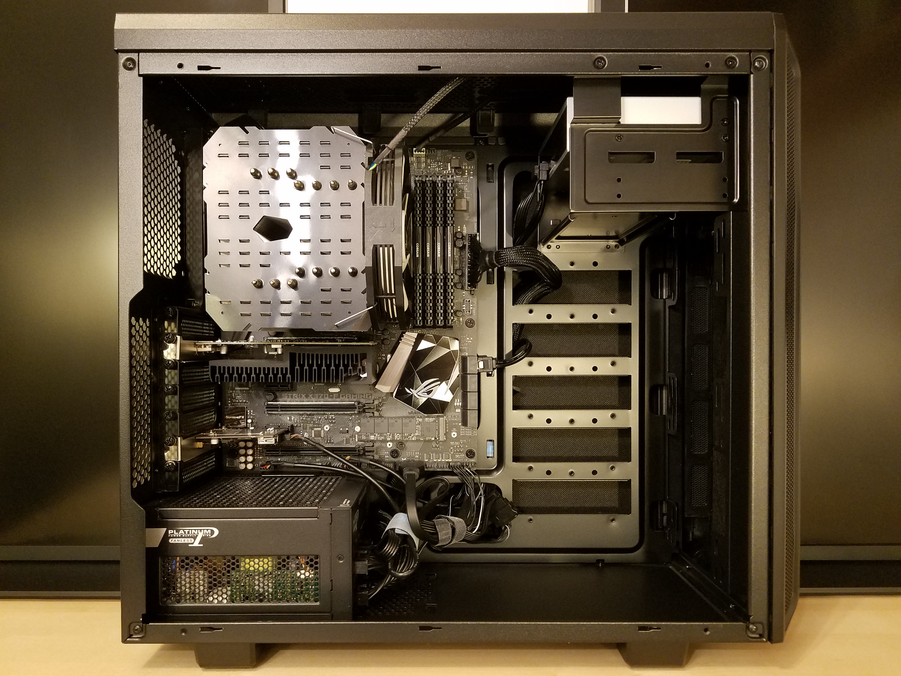
También podemos ver, estratégicamente distribuidas por distintas zonas de la caja, rejillas o aberturas por las que debe circular el aire, libremente o con ayuda de ventiladores situados en su interior, cuyo fin es disipar el calor que generan los componentes internos.
En la actualidad también es común encontrar carcasas con algunos de sus paneles exteriores en cristal templado o metacrilato para dejar ver el interior, y con ventiladores con luces RGB. Estas suelen estar orientadas al sector gaming.
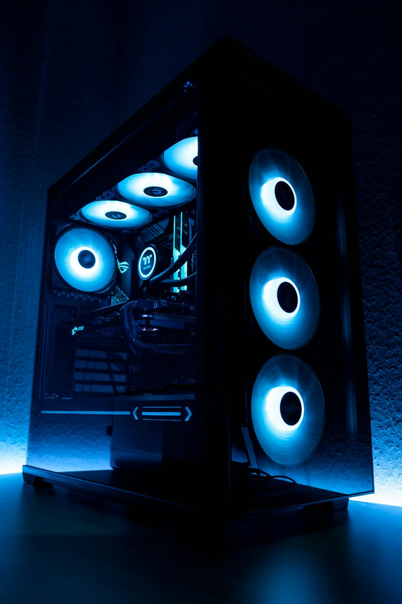
1.2.- Fuentes de alimentación. #
La fuente de alimentación es un elemento imprescindible cuya misión es alimentar de corriente continua a todos los componentes que se integran en el interior del ordenador y a los de bajo consumo que se conectan desde el exterior. Para ello debe ser capaz de suministrar una potencia no menor de 350 vatios, aunque esto depende mucho de los componentes instalados en el equipo. Hay que tener en cuenta que una fuente con potencia insuficiente puede causar problemas de mal funcionamiento y hasta dañar el equipo.
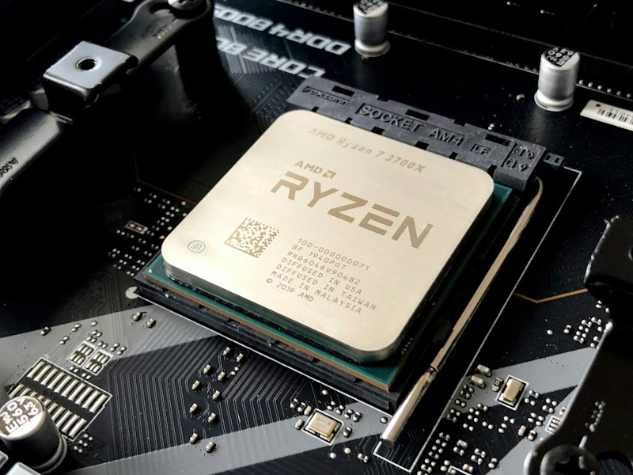
La fuente de alimentación a veces viene preinstalada en la caja del ordenador, aunque no siempre es así, para poder elegir con independencia de la caja un modelo que se adapte a nuestras necesidades, por ejemplo, que sea de mayor potencia, más silenciosa, más eficiente, con cables modulares, que tenga luces decorativas, etc.
La fuente de alimentación es una pequeña caja metálica, con muchas rejillas para ventilarse, de la que salen los cables con los conectores necesarios para alimentar los componentes del interior del ordenador con voltajes de más y menos 12 voltios, más 5 voltios y más 3,3 voltios (12 voltios para los motores de las unidades de almacenamiento, ventiladores, CPU y tarjeta gráfica, y 5 y 3,3 voltios para otros componentes de menor consumo).
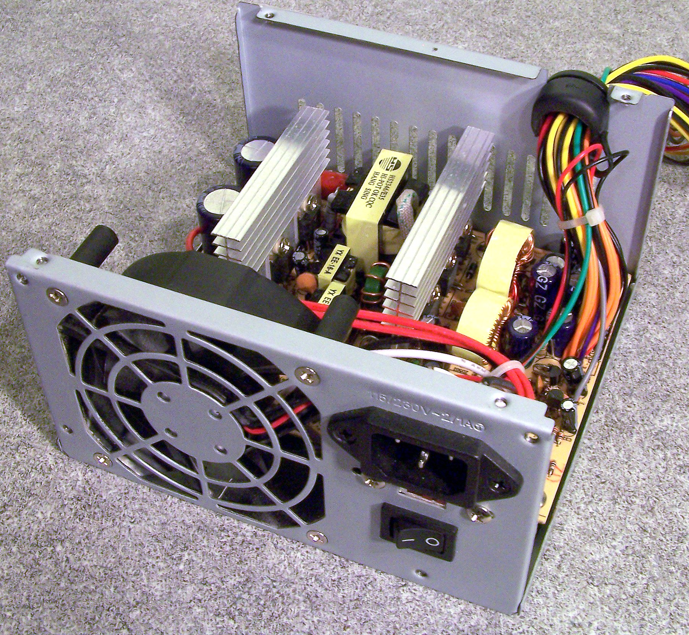
Existen fuentes modulares que permiten el acoplamiento de los cables con los conectores necesarios, pudiendo retirar los cables sobrantes no utilizados para que no molesten dentro de la caja.
Desde la parte trasera de la fuente de alimentación podemos ver el conector para el cable de la conexión a la red eléctrica y la rejilla de ventilación por la que su propio ventilador extrae el aire caliente que ella misma genera.
La parte trasera adicionalmente puede disponer de otros elementos como:
- Un interruptor de apagado total de la fuente que evita que el equipo pueda quedar suspendido o en standby, en cuyo caso podría reiniciarse con un toque de teclado, un movimiento de ratón o una señal externa desde la tarjeta de red.
- Un selector para fijar la entrada de corriente alterna a 110 voltios o a 220 voltios, según región.
- Un conector para alimentación eléctrica del monitor, en fuentes muy antiguas.
Autoevaluación
Señala las respuestas correctas respecto a las cajas de ordenador.
1.3.- Placas base. #
La placa base es una tarjeta de circuito impreso a la que se conectan los demás elementos de un ordenador. Contiene una serie de circuitos integrados entre los que se encuentra el chipset, que le sirve como centro de conexión entre el procesador y el resto de componentes.
Su diseño debe cumplir unos estándares basados en el factor de forma, que define algunas de sus características físicas, por ejemplo:
- La forma de la placa base con sus dimensiones exactas (ancho y largo).
- La posición de los anclajes, o sea, el lugar donde se sitúan los huecos para los tornillos que la fijan al chasis.
- Las áreas donde se sitúan algunos de sus componentes como el zócalo del procesador, las ranuras de expansión y los conectores de la parte trasera para teclado, ratón, USB, red, etc.
- Las conexiones eléctricas de la fuente de alimentación: la cantidad de conectores y su forma, sus voltajes, etc.
El principal factor de forma utilizado en la actualidad es el ATX y sus derivados como microATX (a veces abreviado µATX, uATX o mATX).

La placa base es un componente fundamental a través del cual se integran e interrelacionan todos y cada uno de los dispositivos del ordenador.
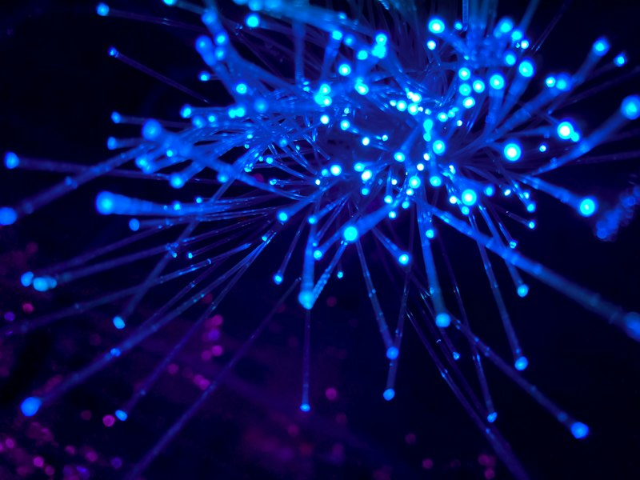
La placa base incluye un chip conocido como BIOS con un software propio o firmware, que le permite realizar funcionalidades básicas, como reconocimiento y autochequeo de los dispositivos instalados (POST), gestión básica de vídeo y del teclado. Es el software que se encarga de la parte del arranque del equipo anterior al sistema operativo. También incluye una utilidad de configuración que permite configurar algunos parámetros de los componentes del equipo.
En lugar de BIOS, los equipos actuales incorporan un firmware llamado UEFI que introduce, entre otras, mejoras como:
- Interfaz de usuario gráfica (GUI) controlable con ratón y teclado.
- Posibilidad de conectar dispositivos de almacenamiento de más de 2 TB de capacidad.
- Procedimiento de arranque totalmente nuevo y más seguro.
A pesar de que UEFI es el nombre correcto del firmware de la placa base actual, por costumbre se sigue usando el término BIOS.
Un componente fundamental de la placa base es el chipset. Este es un chip (o conjunto de chips) cuya función es interconectar a unos componentes con otros.
Se ha de tener en cuenta que la placa base es el componente del equipo que determina en mayor medida la compatibilidad del resto de componentes. El manual de la placa base es el documento de referencia más importante del equipo, en el que se suelen recoger:
- Advertencias de seguridad: Para el uso y manipulación de la placa base y la instalación del resto de hardware.
- Instalación de componentes: Normalmente con imágenes que muestran cómo se deben instalar los distintos componentes del equipo (procesador, memoria RAM, unidades de almacenamiento, etcétera).
- Especificaciones: Tabla con las características de la placa base y compatibilidad de componentes.
- Contenidos de la caja: Indica lo que se incluye en la caja de la placa base que se ha comprado.
- Diagrama de la placa base: Dibujo a modo de "mapa" que muestra todos sus componentes (ranuras, conectores, zócalo del procesador, adaptadores integrados, etcétera) y sus nombres.
- Panel trasero: Dibujo con todos los puertos del panel trasero, sus nombres y características.
- Diagrama de bloques: Que muestra con dibujos/bloques y flechas cómo se intercomunican entre sí la CPU, el chipset y el resto de dispositivos del equipo.
- Características de los componentes: Aclaraciones sobre los distintos componentes de la placa.
- Uso de la BIOS/UEFI: Cómo acceder a la utilidad de configuración de la BIOS/UEFI y principales acciones que se pueden realizar. A menudo existe un manual de la UEFI independiente, dada la gran cantidad de opciones de la misma.
- Resolución de problemas: Con problemas comunes, sus causas y posibles soluciones.
1.3.1.- El chipset de la placa base.
El chipset de la placa base es un chip (o conjunto de chips) que interconecta a unos componentes con otros. Su diseño ha variado a lo largo de los años:
- Chipset clásico: Hasta aproximadamente el año 2008 los chipsets de las placas bases normalmente eran un conjunto formado por dos chips llamados puente norte y puente sur, en inglés northbridge y southbridge respectivamente. Se trata de dos circuitos integrados que con el tiempo fueron recogiendo en su diseño funcionalidades de controladores que antes habían sido independientes. Así, el puente norte se encarga de controlar funciones como las comunicaciones entre los componentes más rápidos, como son el procesador, la memoria, y la tarjeta gráfica (a través de la ranura de expansión principal). Incluso en algunos modelos puede integrar adaptadores de vídeo, sonido y red. El puente sur, por su parte, lleva el control del resto de puertos internos y externos de la placa base, más lentos. Por tanto, el chipset hace que la placa base funcione como un sistema "nervioso", que interconecta todos sus componentes por medio de diversos buses, permitiendo la comunicación entre ellos.
- Chipset actual: La arquitectura del chipset clásico generaba varios cuellos de botella en las comunicaciones entre la CPU, la RAM y las tarjetas gráficas de última generación (conectadas mediante PCI-Express). En la actualidad, la CPU incorpora el controlador de memoria y controlador PCI-Express para que la CPU se pueda comunicar de manera directa con estos componentes rápidos. A menudo, también incorpora gráficos integrados (iGPU) e incluso, en ocasiones, controla dispositivos más lentos. Se puede decir que las que antes eran funciones del northbridge han quedado integradas en el procesador, quedando un único chip para realizar el resto de tareas. A este chip se le llama simplemente chipset, aunque a veces se utiliza southbridge o PCH.
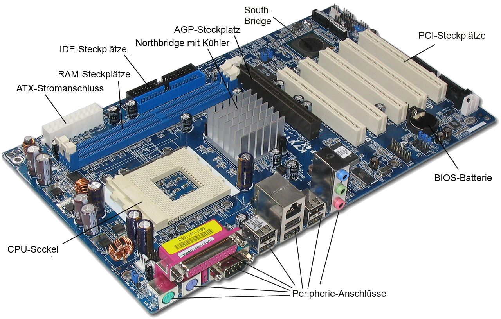
Autoevaluación
Señala las respuestas correctas relativas a la placa base del ordenador:
1.4.- Procesadores. #
El procesador o microprocesador (a menudo llamado también CPU) es la parte más importante del ordenador porque es el encargado de controlar al resto de componentes. Se trata de un microchip compuesto de miles de millones de microcomponentes recogidos en una cápsula, normalmente cerámica, de la que salen una serie de patillas o contactos, que hay que acoplar en el zócalo correspondiente de la placa base.
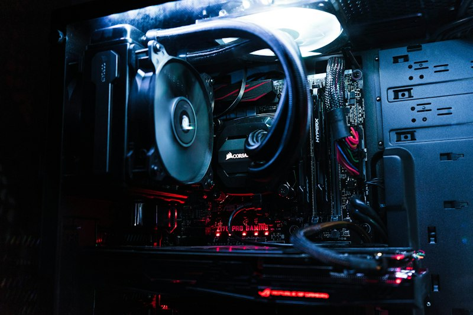
Hay diversas características que definen un procesador:
- La frecuencia de reloj, que se mide en hercios, o en alguno de sus múltiplos (normalmente en GHz, o millones de Hz). Con esta medida se especifica el número de ciclos por segundo, que tiene relación con el máximo de operaciones por segundo que es capaz de procesar. Se supone que cuantos más hercios tenga un procesador, más rápido es y puede realizar más operaciones. Esta medida puede ser útil para comparar procesadores de un mismo fabricante y de la misma generación, ya que iguales frecuencias de reloj pueden suponer diferentes velocidades de trabajo si la comparación se hace con procesadores de diferentes fabricantes, o con procesadores cuya arquitectura interna es muy distinta (por ejemplo, procesadores de un mismo fabricante con varios años de diferencia entre ellos). En la actualidad las CPU suelen tener frecuencias de reloj entre 3 y 5 GHz.
- La tecnología de fabricación, que se mide en nanómetros. Es una medida utilizada para referirse al tamaño de los transistores que componen los procesadores. Cuanto menor sea el tamaño de los transistores, más cerca pueden colocarse unos de otros. Esto permite reducir la cantidad de energía eléctrica necesaria para comunicarlos, y por consiguiente disminuir el calor generado durante el funcionamiento del microprocesador, que puede alcanzar mayores frecuencias de reloj. En 2023 se fabrican procesadores con tecnología de 7 nm y hasta 5 nm, y este número sigue reduciéndose con el paso de los años.
- El tamaño y distribución de la memoria caché. Es una memoria de gran velocidad utilizada para almacenar copias de instrucciones y datos a los que el procesador accede con frecuencia. La inclusión de una buena cantidad de memoria caché en el procesador hace que mejore su rendimiento porque permite reducir el número de accesos, mucho más lentos, a la memoria RAM. Suele haber varios tipos de memoria caché que se organizan por niveles, creando una jerarquía basada en la proximidad al núcleo del procesador, de forma que cuanto mas cerca esté, trabajará a mayor velocidad pero será de menor tamaño. Nos podemos encontrar con:
- Caché de primer nivel o L1: Caché que está integrada en el núcleo del procesador y trabaja a su misma velocidad. Su capacidad varía de un procesador a otro, estando normalmente entre los 64 KB y los 512 KB. Suele estar dividida en dos partes dedicadas, una a trabajar con las instrucciones y otra con los datos.
- Caché de segundo nivel o L2 y de tercer nivel o L3: También suelen están integradas en el chip del procesador, aunque no directamente en su núcleo. En 2023, sus tamaños llegan a los 32 MB en L2 (Intel Core i9-13900K) y los 128 MB en L3 (AMD Ryzen 9 7950X3D), y con los años va aumentando.
1.4.1.- Núcleos y características de funcionamiento de procesadores.
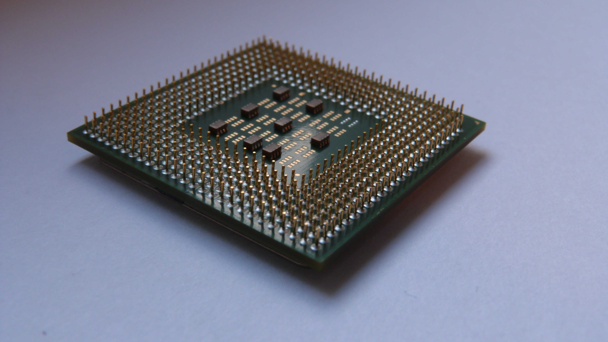
Siguiendo con las características de los procesadores, vamos a detallar algunas que tienen mucho que ver con el funcionamiento de los procesadores más modernos, independientemente de si estos son utilizados por ordenadores de sobremesa, portátiles o grandes ordenadores.
- Número de núcleos. Cada núcleo (en inglés core) de procesamiento es un conjunto de componentes de la CPU que ejecuta un subproceso o hilo (en inglés thread). Con varios núcleos se pueden ejecutar varios subprocesos al mismo tiempo. Como se está haciendo difícil, o poco rentable, aumentar la frecuencia de trabajo de los nuevos procesadores para continuar incrementando su rendimiento, los fabricantes han aprovechado el altísimo nivel de integración conseguido en su fabricación y han incluido más de un núcleo en el mismo encapsulado. Además, las CPU actuales a menudo utilizan SMT (HT en terminología de Intel), lo que hace que los núcleos puedan avanzar en más de un subproceso, normalmente dos por cada núcleo. Así, para las CPU modernas se suele indicar el número de núcleos y de subprocesos que pueden ejecutar simultáneamente. Por ejemplo, una CPU AMD Ryzen 5 5600X tiene 6C/12T (6 cores o núcleos y 12 threads o subprocesos simultáneos). Aunque con SMT se puede avanzar en dos subprocesos, rinden más dos núcleos físicos sin SMT (2C/2T) que uno con SMT (1C/2T). Intel en su 12ª generación de procesadores introdujo una arquitectura mixta con dos tipos de núcleos distintos en algunas de sus CPU. Unos núcleos son P-cores (Performance-cores o "núcleos de rendimiento"), los cuales son más potentes, consumen más energía y usan HT. Los otros son llamados E-cores (Efficient-cores o "núcleos eficientes"), los cuales son menos potentes, consumen menos energía y no usan HT. En colaboración con los sistemas operativos modernos se pretende que los P-cores se encarguen de las tareas más exigentes mientras que los E-cores ejecuten las tareas más ligeras y tareas en segundo plano. Una CPU Intel Core i7-12700K tiene 12C/20T (8 P-cores con HT y 6 E-cores sin HT).
- Principal conjunto de instrucciones. Los procesadores se suelen dividir según su arquitectura en CISC y RISC. Los primeros usan un "conjunto de instrucciones complejas", y los segundos un "conjunto reducido de instrucciones". Las instrucciones complejas de los CISC son muchas, incluyen accesos de lectura/escritura de datos, y pueden tardar múltiples ciclos de reloj en ejecutarse. Las instrucciones reducidas de los RISC, en cambio, son pocas, simples, no incluyen accesos de lectura/escritura en la instrucción (las lecturas y escrituras son instrucciones independientes), y se ejecutan normalmente en un único ciclo de reloj, pero se necesitan más instrucciones simples para hacer lo mismo que con pocas instrucciones complejas. La mayoría de procesadores de ordenadores domésticos de Intel y AMD son CISC, y utilizan la arquitectura llamada x86-64 (también conocida como x64, x86_64, AMD64 e Intel 64), lo cual los hace compatibles entre sí. Por otro lado, los principales procesadores RISC de la actualidad utilizan versiones de la arquitectura ARM de 64 bits, como los smartphones, la mayoría de TabletPCs, los ordenadores de Apple con procesadores M1 o M2, y cada vez más se están introduciendo los procesadores ARM en el sector de los servidores, ya que estos chips, por su propio diseño, consumen bastante menos energía que los x86-64. En la actualidad, todas estas arquitecturas normalmente son de 64 bits. Es importante señalar que, debido a las evidentes diferencias entre sus instrucciones máquina, los procesadores x86-64 y ARM no son compatibles entre sí, y por tanto es necesario desarrollar su software específicamente para ellos.
- Zócalo compatible. Cada procesador es compatible con un determinado zócalo de CPU presente en la placa base, así como con una familia determinada de chipsets. Normalmente si el zócalo indicado de una CPU es el mismo que el de una placa base quiere decir que ambos son compatibles, pero hay que tener cuidado porque en algunos casos puede no ser compatible con el chipset de la placa base o puede no estar soportado por la BIOS (esto último a veces se puede solucionar actualizándola a una nueva versión).
- Refrigeración. Otra característica no menos importante de los procesadores es que durante su funcionamiento producen tanto calor que pueden llegar a quemarse si no se adoptan las medidas para evitarlo. Así que se hace imprescindible el uso de sistemas para disipar ese calor, llamados coolers o refrigeradores. Lo habitual es colocar sobre la CPU un disipador, que es un elemento metálico (de aluminio o cobre) con mucha superficie de contacto con el aire, que absorbe el calor del procesador disipándolo en el aire. Esto se conoce como disipación pasiva. Como en los procesadores actuales esto no es suficiente, se acoplan ventiladores a los disipadores para que evacúen el calor con mayor rapidez mediante sus flujos de aire, produciendo una disipación activa.
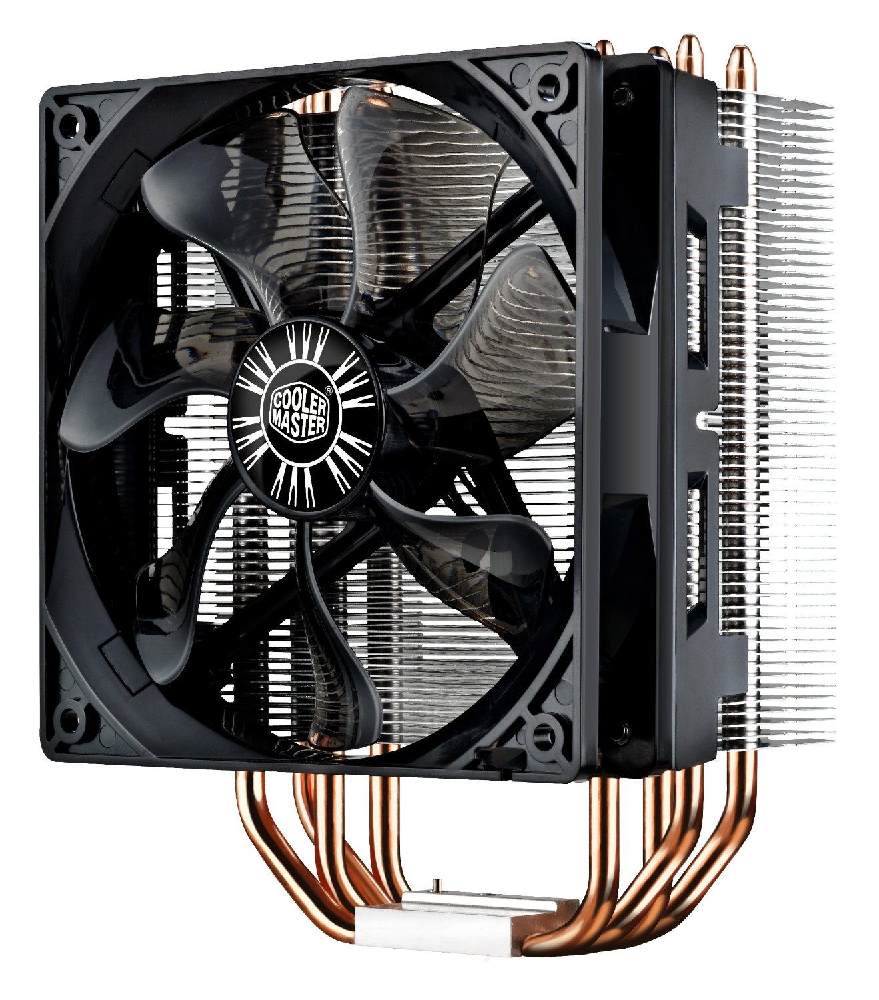
Existen sistemas alternativos como por ejemplo la refrigeración líquida que extrae el calor del procesador y de otros componentes aprovechando su mayor conductividad. Aunque tiene el inconveniente de tener que instalar circuitos cerrados para hacer pasar el líquido por las zonas a refrigerar además de necesitar un radiador externo para que el líquido se desprenda del calor.
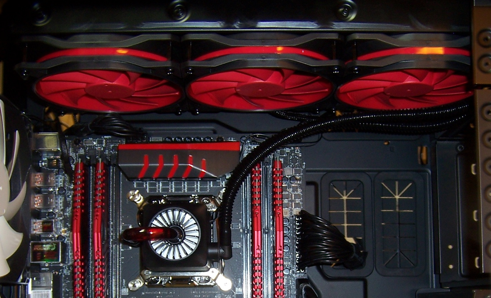
Pruebas de rendimiento (benchmarks).
Comparar el rendimiento de dos procesadores no es una tarea sencilla, dado que depende de muchos factores como la frecuencia de reloj, la arquitectura interna, el número de núcleos y subprocesos, el tamaño y distribución de la caché, etc. Además, unos procesadores pueden ser mejores en cierto tipo de tareas y peores en otras.
Para comparar el rendimiento de los procesadores se llevan a cabo pruebas de rendimiento o benchmarks. Estas son pruebas que consisten en ejecutar una misma tarea con dos procesadores distintos (en equipos que deben tener, por lo demás, componentes similares) y medir el resultado. Esto puede ser cronometrar lo que tardan en realizar una misma tarea, o medir el número de repeticiones que han hecho de una tarea en bucle en un tiempo fijo.
Existen pruebas de rendimiento sintéticas y reales. Las sintéticas son pruebas que están diseñadas exclusivamente para medir el rendimiento de procesadores, mientras que las reales son pruebas realizadas usando software de trabajo real, utilizando proyectos o datos de prueba representativos de lo que sería una carga de trabajo real.
Dado que los propios fabricantes de procesadores presentan datos de benchmarks de dudosa fiabilidad intentando favorecer a sus productos, es recomendable acudir a sitios de Internet donde se realicen pruebas de rendimiento independientes.
Autoevaluación
Señala las características que corresponden a un procesador.
1.5.- Memoria RAM. #
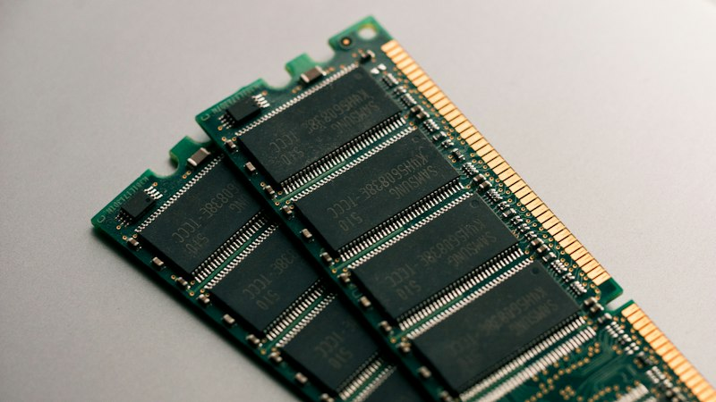
La memoria RAM (del inglés Random-Access Memory), llamada a menudo memoria principal, es la memoria que necesita el procesador para ejecutar los programas. En ella busca las instrucciones y los datos, y en ella guarda los resultados. La memoria RAM se dice que es volátil, ya que necesita un continuo refresco de alimentación eléctrica para mantener la información, lo que hace que pierda todo su contenido cuando el equipo se apaga.
Físicamente, los módulos de memoria RAM son pequeñas tarjetas de circuito impreso a las que se sueldan los chips de memoria por una o por ambas caras. Llevan en uno de sus cantos una fila de pines o contactos metálicos para insertarlos en los zócalos de memoria de la placa base.
Las principales características de los módulos de memoria son:
- Capacidad: Es la cantidad de información que puede albergar. Son comunes los módulos con capacidades entre 4 GB y 32 GB.
- Frecuencia: Indica la cantidad de transferencias por segundo que puede realizar el módulo, se suele indicar en MHz o en MT/s (son lo mismo). Son normales frecuencias entre 2133 MHz y 3600 MHz para DDR4 y entre 4800 MHz y 6000 MHz para DDR5.
- Latencia CAS o CL: Es el tiempo que tarda en llegar un dato desde que se solicita. Se indica en clics de reloj, por lo que un número menor es mejor. Este número depende de la frecuencia de la memoria, por lo que puede ser engañoso.
La mayoría de los equipos actuales soportan dual-channel. Esta es una técnica que permite acceder a dos módulos de memoria simultáneamente, situados cada uno en un canal de memoria distinto, lo cual puede llegar a duplicar el ancho de banda de la memoria en escenarios óptimos. Para el buen funcionamiento de la memoria en dual-channel los módulos se deben colocar por parejas, uno en cada canal según indique el manual de la placa base, y los módulos deben tener la misma frecuencia y latencia CAS. Se suelen comprar módulos idénticos en parejas o grupos de cuatro para asegurar que funcionan bien en dual-channel.
Los módulos que actualmente se encuentran en el mercado son del tipo DDR (Double Data Rate) o doble tasa de transferencia de datos, que vienen integrados principalmente en tarjetas de memoria DIMM o SO-DIMM, usados en equipos de sobremesa y en portátiles, respectivamente.
Los encontramos en diferentes versiones, que podemos reconocer por el número de contactos y por la posición en la que tienen la muesca que les impide su colocación en un zócalo que no sea el de su tipo:
- DDR: Son módulos de RAM que usan memorias síncronas (SDRAM), en encapsulados tipo DIMM, que permiten hacer dos transferencias simultáneas en un mismo ciclo de reloj. Tienen 184 pines en DIMM, y 200 en SO-DIMM. Se introdujeron en 1998.
- DDR2: Trabajan al doble de la frecuencia del reloj de memoria, por lo que durante cada ciclo de reloj se realizan cuatro transferencias. Tienen 240 pines en DIMM y 200 en SO-DIMM. Se introdujeron en 2003.
- DDR3: Pueden realizar ocho transferencias de datos por cada ciclo de reloj. Tienen 240 pines en DIMM y 204 en SO-DIMM. Se introdujeron en 2007.
- DDR4: No aumentan el número de transferencias por ciclo de reloj, manteniéndose en 8, pero aumentan la velocidad incrementando la frecuencia del reloj. Además, tienen mayor densidad (mayor capacidad de datos) y menores requisitos de voltaje. Usan encapsulados DIMM de 288 pines, y SO-DIMM de 260. Se introdujeron en 2014.
- DDR5: Las transferencias aumentan a 16 por ciclo y aumentan las frecuencias base de reloj, así como se reduce el voltaje de funcionamiento. Los módulos DDR5 incluyen módulo regulador de voltaje para alcanzar muy altas frecuencias. Se introdujeron en 2020.
En la actualidad, los equipos domésticos usan memorias DDR5 o DDR4.
Autoevaluación
De las siguientes respuestas, señala la correcta.
1.6.- Dispositivos de almacenamiento I. #
Los dispositivos de almacenamiento conforman lo que se llama memoria secundaria o masiva. Estos dispositivos se caracterizan por almacenar datos de manera permanente, en contraposición a la memoria principal o RAM. Además, si los comparamos con la memoria principal, estos dispositivos pueden tener capacidades muy superiores y ser más baratos en precio por bit, aunque su velocidad de transferencia y de acceso a los datos es inferior.
1.7.- Dispositivos de almacenamiento II. #
Algunos de los principales dispositivos de almacenamiento utilizados en los ordenadores actuales son:
- Unidades SSD: Los SSD o "Unidades de Estado Sólido" son unidades de almacenamiento basadas en memoria flash que han desplazado a los discos duros tradicionales como el dispositivo de almacenamiento principal en los ordenadores. Su velocidad de transferencia de datos es muy alta y su tiempo de acceso a los datos muy reducido. Consumen poca energía y no generan ruido ni vibraciones. Se suelen utilizar para almacenar el sistema operativo y las aplicaciones que se usan con más frecuencia. Suelen comercializarse como tarjetas M.2 de tamaño reducido, o como unidades SATA de 2'5 pulgadas, con capacidades que alcanzan varios TB.
- Discos duros (HDD): Los discos duros mecánicos tradicionales se han utilizado desde hace décadas. La tecnología que usan para grabar y leer la información utiliza campos magnéticos. Su rendimiento es bastante inferior al de los SSD, por lo que se han visto relegados a un papel secundario. Su bajo coste y su alta capacidad, que puede llegar a decenas de TB, los hacen ideales para ser utilizados como almacenamiento de datos que no requieren una alta velocidad de acceso ni transferencias muy rápidas.
- Memorias USB (pendrives): Estos dispositivos están basados en memoria flash, como los SSD. Su pequeño tamaño y alta capacidad los hacen ideales para transportar datos entre distintos dispositivos. La mayoría de aparatos con puertos USB pueden leer información de estos dispositivos. Se suelen comercializar con capacidades de hasta 1 TB.
- Tarjetas de memoria: También son memorias de estado sólido, basadas en memoria flash. En su concepción son muy similares a las memorias USB, pero estas tarjetas requieren de un dispositivo lector de tarjetas para poder leer o escribir en ellas. Este lector de tarjetas puede estar integrado en un aparato o puede ser una unidad que se instala, como en un frontal de una torre de ordenador. Las tarjetas más populares son las SD y sus derivadas, y se suelen usar en cámaras de fotografía digitales y otros dispositivos portátiles. Suelen tener capacidades similares a las de los pendrives.
- Unidades de discos ópticos: Estas unidades son capaces de leer y a veces escribir distintos tipos de discos mediante tecnología óptica. Estos discos son los CD, DVD y BD. El uso de CD y DVD en ordenadores personales ha sido muy común en el pasado, pero cada vez se utilizan menos, en favor de otras alternativas como las memorias USB.
Autoevaluación
¿Cuál de los siguientes dispositivos de almacenamiento se utiliza con más frecuencia para instalar el sistema operativo y las aplicaciones más utilizadas?
1.8.- Tarjetas de expansión. #
Las tarjetas de expansión son tarjetas que incluyen controladoras que pueden ampliar o mejorar las prestaciones de un equipo informático. Entre estas podemos encontrar tarjetas gráficas, tarjetas de red, tarjetas de sonido o tarjetas para la ampliación de puertos de almacenamiento.
Normalmente, las tarjetas de expansión se instalan en ranuras de expansión de la placa base de tipo PCI Express (abreviado PCIe o PCI-E), las cuales pueden tener distinto tamaño (entre x1 y x16) y distinto número de líneas de transmisión (también entre x1 y x16), siendo el número de líneas de transmisión siempre igual o menor al tamaño de la ranura. En equipos antiguos también es común ver ranuras PCI, estándar predecesor de PCle que prácticamente ya no se incluye en equipos nuevos.
En la siguiente imagen se muestran cuatro ranuras PCle de distintos tamaños y distinto número de líneas (indicado textualmente en la placa base). De arriba a abajo: PCIe x16 con 16 líneas, PCIe x1 con 1 línea, PCIe x1 con 1 línea, PCIe x16 con 4 líneas (nótese al ampliar la imagen que los conectores no recorren toda la ranura).
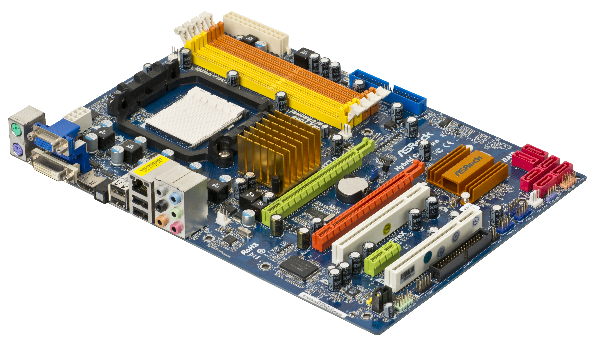
Hay que tener en cuenta que PCle es un estándar de bus de comunicaciones en serie que no solamente se utiliza para las ranuras de expansión. También se utiliza, por ejemplo, en las ranuras M.2 de los SSD de tipo NVMe (normalmente con 4 líneas) o, en el caso de placas base de equipos AMD, para la comunicación entre la CPU y el chipset. Además, existen diversas versiones del estándar PCIe, cuya velocidad por línea se ha ido duplicando con cada versión. A pesar de ello, todas las versiones son compatibles entre sí, pudiéndose instalar una tarjeta PCIe 3.0x16 en una ranura PCIe 4.0x16 o una PCle 2.0x16, aunque en este último caso se reducirá el ancho de banda disponible para la tarjeta.
↔ Desliza horizontalmente para ver la tabla completa
| Versión | Introducción | Tasa de transferencia por línea | Ancho de banda (x1) | Ancho de banda (x4) | Ancho de banda (x8) | Ancho de banda (x16) |
|---|---|---|---|---|---|---|
| 1.0 | 2003 | 2.5 GT/s | 0.25 GB/s | 1 GB/s | 2 GB/s | 4 GB/s |
| 2.0 | 2007 | 5 GT/s | 0.5 GB/s | 2 GB/s | 4 GB/s | 8 GB/s |
| 3.0 | 2010 | 8 GT/s | 1 GB/s | 4 GB/s | 8 GB/s | 16 GB/s |
| 4.0 | 2017 | 16 GT/s | 2 GB/s | 8 GB/s | 16 GB/s | 31.5 GB/s |
| 5.0 | 2019 | 32 GT/s | 4 GB/s | 16 GB/s | 31.5 GB/s | 63 GB/s |
| 6.0 | 2022 | 64 GT/s | 7.5 GB/s | 30 GB/s | 60.5 GB/s | 121 GB/s |
| 7.0 | 2025 (planeado) | 128 GT/s | 15 GB/s | 60.5 GB/s | 121 GB/s | 242 GB/s |
1.8.1- Tarjetas gráficas.
Una tarjeta gráfica o tarjeta de vídeo es una tarjeta de expansión adicional que procesa la información de gráficos enviada por el procesador, generando imágenes que son enviadas a un dispositivo de salida como un monitor o un proyector. Igual que ocurre con la CPU, a la tarjeta gráfica a menudo se la llama GPU, aunque veremos que la GPU es un componente específico de la tarjeta.
La conexión de estos adaptadores o controladores gráficos a la placa base se hace actualmente a través de una ranura de expansión PCI Express (comúnmente escrito PCIe) de tamaño x16, ya que necesitan un bus rápido de comunicación. Hay modelos de procesadores (y antiguamente de placas base) que integran en su circuitería una controladora gráfica (llamada GPU integrada o iGPU) de suficiente calidad como para un uso normal del ordenador, pero que se queda escasa de potencia trabajando para aplicaciones que hagan un uso intensivo de representaciones gráficas, como por ejemplo juegos en 3D.
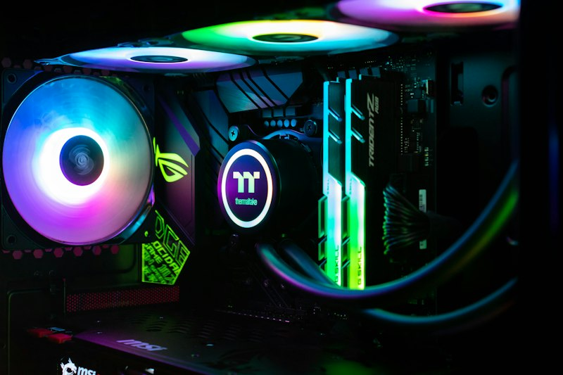
Las tarjetas gráficas integran los siguientes componentes:
- La GPU es un procesador dedicado en exclusiva al tratamiento de gráficos que libera al procesador central de esta tarea. Igualmente, necesita de sistemas para la disipación del calor que producen. También se le llama el "chip gráfico". Los principales fabricantes de GPU son Nvidia (chips GeForce), AMD (chips Radeon y gráficos integrado en sus procesadores) e Intel (chips Arc y gráficos integrados en sus procesadores).
- La memoria de vídeo o VRAM que incorporan es para uso exclusivo de la propia tarjeta. Esta memoria es similar a la RAM del ordenador, pero suele estar diseñada específicamente para tarjetas gráficas, para aumentar su rendimiento. Cuando el adaptador gráfico está integrado en el procesador se reserva para su uso particular una parte de la memoria RAM del ordenador, diciendo en ese caso que la iGPU usa memoria compartida con la CPU.
- EI RAMDAC es un conversor de señal digital a analógico. Su función es transformar las señales para que puedan ser reproducidas por monitores analógicos. Este componente sólo es necesario cuando se utiliza una señal de vídeo analógica como VGA. En la actualidad, la mayoría de monitores y tarjetas gráficas utilizan señales digitales como HDMI o DisplayPort, por lo que este componente ya no suele estar presente.
Los puertos de conexión más habituales entre la tarjeta gráfica y el monitor son:
- HDMI. Interfaz digital que transmite tanto vídeo como audio. Es muy popular en televisiones, videoconsolas y otros aparatos domésticos.
- DisplayPort (DP). Interfaz digital que también transmite vídeo y audio. Es muy popular en monitores de ordenador y tarjetas gráficas.
- DVI. Interfaz de vídeo digital que sólo transmite vídeo. Está quedando en desuso y a menudo ya no se incluye en productos nuevos.
- VGA. Interfaz de vídeo analógico que ha sido utilizado durante muchos años. Todavía hay monitores que lo incorporan, pero cada vez es más raro verlo en productos nuevos.
Autoevaluación
De las siguientes respuestas, señala las que son correctas.
1.8.2- Otras tarjetas de expansión.
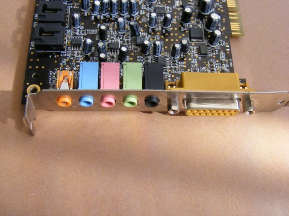
Tarjeta de sonido
Una tarjeta de sonido es una tarjeta de expansión que permite la entrada y salida de audio a través de sus conectores. Normalmente se inserta en una ranura PCIe x1 o PCI, aunque la mayoría de modelos de placas base ya vienen con un adaptador de sonido integrado. Las tarjetas de sonido incorporan los conectores tipo mini jack de 3'5 mm que se necesitan para la conexión de los dispositivos de sonido.
Los conectores suelen venir codificados por colores:
- Entrada analógica para micrófono: rosa.
- Entrada analógica "Line-In": azul.
- Salida analógica para la señal estéreo principal (altavoces frontales): verde.
- Salida analógica para altavoces traseros: negro.
- Salida analógica para altavoces laterales: plateado.
- Salida analógica para altavoz central y subwoofer: naranja.
- Salida Digital SPDIF: conector RCA naranja o conector óptico TOSLINK.
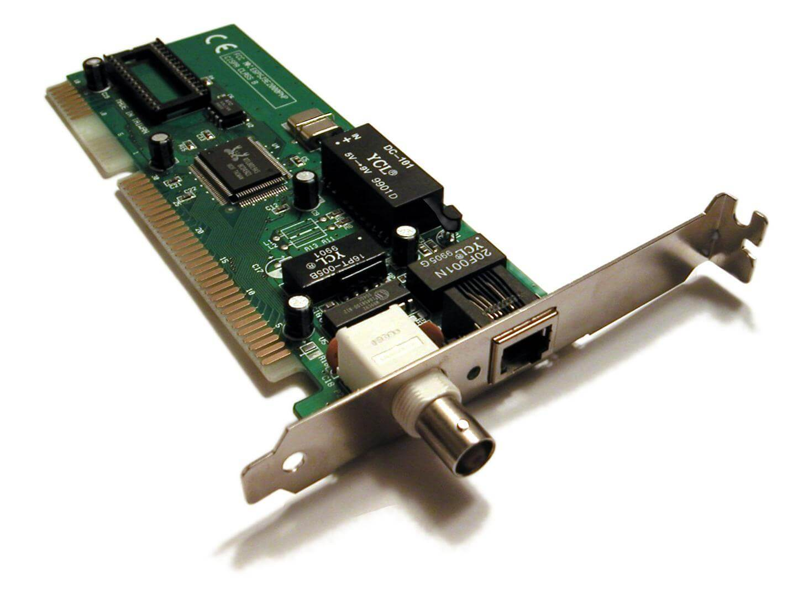
Tarjeta de red
Hoy día es extraño que un ordenador no disponga de adaptador/tarjeta de red, ya sea cableado (Ethernet), inalámbrico (Wi-Fi) o ambos simultáneamente. Esto permite a los ordenadores trabajar en red local y conectarse a Internet, usualmente a través de una conexión de fibra óptica, o de cable tipo DOCSIS o mediante ADSL donde la fibra no está disponible. Casi todas las placas base incluyen un adaptador de red integrado, por lo que no es necesario instalar una tarjeta a no ser que el adaptador integrado deje de funcionar.
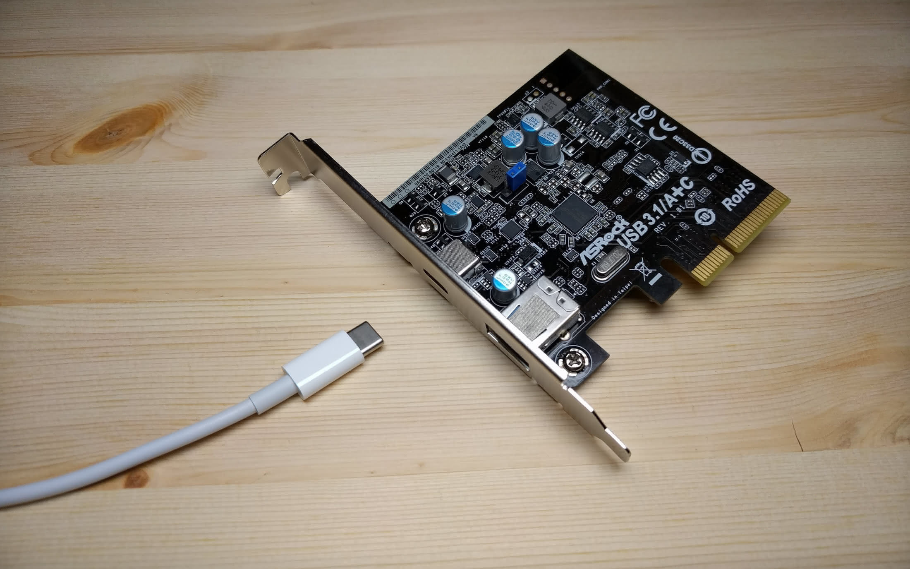
Tarjetas de ampliación de puertos
Son tarjetas que permiten aumentar la cantidad de puertos o conexiones disponibles en el equipo. Normalmente, estas tarjetas se conectan a una ranura PCIe, y proporcionan puertos externos como USB, o puertos internos como SATA o ranuras M.2.
Autoevaluación
De las siguientes afirmaciones sobre las tarjetas de expansión, señala las que sean correctas.
1.9.- Periféricos de entrada I. #
Los periféricos de entrada son todos aquellos que puede utilizar el usuario para introducir información al ordenador. Para ello será necesario que estén conectados al ordenador de alguna de las formas posibles. La mayoría de las conexiones utilizadas, sobre todo en dispositivos de bajo consumo, reciben la alimentación necesaria a través del propio conector, como en el caso del teclado. Pero otros dispositivos cuyo consumo será mayor necesitan tener su propia fuente de alimentación, como por ejemplo algunos escáneres.
Teclado
Es una de las unidades de entrada más habituales y casi imprescindibles que utilizamos para enviar información al ordenador mediante la pulsación de sus teclas. Nos permite escribir textos, números y enviar señales de control. Su modo de funcionamiento normalmente incluye que lo tecleado aparezca automáticamente en la pantalla, y así comprobar que se ha tecleado lo correcto. Se conecta al ordenador por medio de un conector USB, o en teclados antiguos uno de tipo PS/2. También los hay inalámbricos que necesitan dos terminales con emisor y receptor, uno de ellos en el propio teclado y el otro que debe estar conectado al ordenador por medio de conector USB o PS/2. Además, entre los inalámbricos nos encontramos los que utilizan tecnología bluetooth, que pueden aprovechar los emisores ya incorporados en el ordenador.
Ratón
El ratón es un pequeño dispositivo que al ser desplazado por una superficie plana mueve sobre la pantalla un cursor que lo representa, reflejando sus movimientos. Dependiendo del modelo, un ratón puede tener dos o más botones, e incluso una o varias ruedas de desplazamiento, que permiten dar diversas órdenes en función del botón pulsado y del número de pulsaciones. El cursor, que suele tener aspecto de flecha, se utiliza para señalar los objetos gráficos que aparecen en la pantalla. Para su conexión al ordenador se utiliza un conector USB o PS/2 en modelos antiguos. También como los teclados, pueden ser inalámbricos, incluso hay modelos que pueden compartir el mismo transmisor base con el teclado.
Joysticks y gamepads
El joystick o palanca de mando es un periférico similar al ratón en cuanto que transmite los movimientos que realicemos con él al ordenador. Se utiliza sobre todo en juegos para dirigir el movimiento de personajes o de objetos como aviones, coches, etc. El gamepad es un mando de videojuegos más moderno, con multitud de botones y palancas de control analógicas y digitales. Se suelen conectar al ordenador mediante el puerto USB, habiendo mandos con cable e inalámbricos.
Escáner
Se utiliza para explorar documentos, fotografías, dibujos, etc. y obtener su representación digital. El proceso de digitalizar consiste en tomar información de cada uno de los puntos de la superficie de un objeto y representarlos con valores binarios para generar un duplicado virtual que pueda procesar el ordenador. Utiliza un cabe de tipo USB para conectarse al ordenador. En algunos modelos necesita toma de corriente eléctrica para su propia alimentación. Existen diferentes tipos de escáner: de sobremesa, de rodillo, de mano, de tambor, cenital, etc.
1.10.- Periféricos de entrada II. #
Otros periféricos de entrada que permiten introducir información al ordenador son:
Lectores de códigos de barras y códigos QR
Hay lectores de mano y lectores fijos. Ambos son escáneres especializados en la tarea de leer e interpretar códigos de barras o QR. No se utilizan para obtener el dibujo de los códigos que escanean, sino el valor numérico, textual o binario que representan. Según los modelos existen varias posibilidades de conexión al ordenador: USB, puerto serie, Wi-Fi, bluetooth, incluso directamente al antiguo puerto serie del teclado por medio de un adaptador.
Tableta gráfica o tableta digitalizadora
Es un periférico que permite introducir gráficos o dibujos a mano, como si se hiciera con lápiz y papel. Se trata de una tablilla plana especial sobre la que el usuario simula escribir utilizando el estilete (o lapicero) que le acompaña, aunque en realidad los trazos van apareciendo sobre la pantalla del ordenador. Algunas tabletas tienen delimitadas zonas de actuación especial que actúan como botones al ser tocados con el lápiz, e incluso pueden utilizarse como un ratón de gran precisión ya que permite apuntar y seleccionar los objetos que se encuentran en la pantalla. Las tabletas digitalizadoras actuales suelen conectarse al ordenador mediante USB, aunque hay modelos que lo hacen mediante bluetooth o Wi-Fi.
Micrófono
Es un dispositivo que permite la introducción de sonidos al ordenador como música, señales acústicas o la propia voz. Su conexión se hace a través de un conector llamado mini-jack, proporcionado por la tarjeta de sonido, que debe estar incluida en el ordenador para que pueda ser utilizado. También existe otro tipo de micrófonos que se conectan directamente al puerto USB y se comportan como un dispositivo de grabación de voz, sin necesidad de tarjeta de sonido, ya que ésta va incluida dentro del propio dispositivo.
Cámaras web o de red
Dispositivo cuya utilidad es captar imágenes y codificarlas en formato binario para que puedan ser procesadas por el ordenador. Estas capturas pueden ser almacenadas como imágenes estáticas o como vídeo en movimiento. En la actualidad distinguimos dos tipos de cámaras: las llamadas cámaras web, que necesitan un ordenador para transmitir las imágenes al que se conectan mediante USB; o las llamadas cámaras de red, que se conectan a un punto de red, de forma cableada o inalámbrica. La mayoría de los actuales ordenadores portátiles ya llevan incorporada una diminuta cámara web en su propia carcasa. También existen las cámaras fotográficas y de vídeo digitales, que aún trabajando de forma independiente, pueden conectarse al ordenador por medio de cables USB o de manera inalámbrica para descargar en él sus fotos y vídeos capturados.
Aunque de uso menos frecuente, podemos citar otros periféricos de entrada como:
- Lectores de marcas ópticas que identifican marcas de lápiz en test, en impresos, etc.
- Lectores magnéticos de tarjetas: de crédito, de DNI, etc.
- Lectores de huellas digitales, o del iris del ojo humano, etc.
- Capturadores de señales analógicas procedentes de sensores de humo, o de inundación, de detectores de presencia, o de temperatura, etc. que las convierten en señales digitales para su tratamiento informático. Son utilizadas en la industria o en los hogares para modificar las condiciones ambientales.
Autoevaluación
¿Cuál es el puerto de conexión habitual para conectar los periféricos de entrada actualmente?
1.11.- Periféricos de salida I. #
Los periféricos de salida son todos aquellos mediante los cuales el usuario puede obtener información del ordenador. Junto con los periféricos de entrada, son los elementos de comunicación entre el hombre y la máquina. A continuación vamos a ver algunos de los más habituales.
El monitor
El monitor o pantalla de ordenador es un dispositivo que muestra la interfaz proporcionada por los programas para que interactuemos con ellos. Mediante esta interfaz visual que permite la interacción hombre/máquina podemos hacer que se ejecuten programas al pulsar sobre sus iconos y atender a las peticiones que estos nos hagan y, por supuesto, ver sus resultados. También nos permite ver los datos mientras los introducimos por el teclado o los movimientos del puntero cuando movemos el ratón. Existen varios tipos de monitores según su tecnología:
- Monitores CRT o de Tubo de Rayos Catódicos. Ya es muy difícil encontrarlos por su gran tamaño, peso y menor calidad de imagen.
- Monitores LCD (Liquid Crystal Display). Pantallas planas de cristal líquido, normalmente retroiluminadas mediante LEDs. Dentro de este grupo podemos citar los Monitores LCD de matriz activa, más conocidos como monitores TFT (Thin Film Transistor o "capa fina de transistor"), y dentro de estos hay tres tipos básicos de paneles: los IPS, los TN y los VA, cada uno con sus ventajas e inconvenientes.
- Monitores OLED. Las pantallas OLED no están retroiluminadas, sino que cada píxel se enciende y apaga de manera independiente a los demás. Esto permite tener un mejor contraste de imagen. Por otro lado, el brillo máximo que alcanzan es menor y su precio es más elevado.
Como características de los monitores podemos citar:
- Tamaño del monitor. Expresa la longitud de su diagonal medida en pulgadas. Para LCD son populares los tamaños entre 17 y 32 pulgadas.
- Resolución. En un monitor, cuanto mayor sea su resolución, mejor será la calidad de la imagen en su pantalla. La resolución representa el número total de puntos que puede representar la pantalla, se expresa como el producto de dos números [horizontal x vertical]. Así, que un monitor tenga una resolución máxima de 1024x768 puntos quiere decir que puede representar hasta 768 líneas horizontales de 1024 puntos cada una, pudiendo además representar otras resoluciones inferiores, como son 800x600 o 640x480. Las resoluciones más comunes en la actualidad suelen estar entre 1366x768 (portátiles y monitores antiguos o de baja calidad) hasta 3840x2160 (conocida como "4K").
- Tasa de refresco. Indica el número de veces por segundo que se actualiza la imagen mostrada, en hercios (Hz). A mayor tasa de refresco, los movimientos y animaciones se ven con más fluidez. Los monitores básicos tienen 60 Hz, pero también hay monitores con altas tasas de refresco, como 144, 165, 240 o más Hz, utilizados sobre todo para videojuegos.
En cuanto a la conexión de los monitores al ordenador, puede ser de tipo analógico, que era lo común en los monitores de tipo CRT, pero desde que se han impuesto los monitores digitales ya no es necesario convertir la señal de salida de las tarjetas de vídeo en analógica y la conexión se puede efectuar directamente en digital.
La conexión de los monitores en analógico se hace mediante conectores VGA, y en digital mediante conectores HDMI, DisplayPort y en menor medida DVI-D (en desuso).
Los altavoces
Se utilizan para reproducir sonidos, voces, música, etc. a través de la tarjeta de sonido a la que deben estar conectados. Pueden sustituirse por unos auriculares. También existen altavoces que se conectan por USB, que no requieren tarjeta de sonido porque ellos mismos lo procesan.
1.12.- Periféricos de salida II. #
Una de las unidades de salida más utilizada junto con los monitores es la impresora.
Impresora
Una impresora es un periférico de salida que permite plasmar sobre papel información procedente del ordenador. Se puede considerar a la impresora como el periférico más antiguo, incluso más que el teclado o el monitor. Debe ser por eso que existe tanta variedad de impresoras. Antiguamente utilizaba un puerto de conexión propio, el puerto paralelo, pero desde hace años las impresoras utilizan un puerto USB o se conectan mediante la red local, ya sea de manera cableada o inalámbrica.
Pueden estar dedicadas a un solo ordenador o compartidas entre varios, y pueden ser dispositivos únicos o multifunción cuando van unidos en la misma carcasa a un escáner o a un fax. Necesitan de un cable o fuente de alimentación eléctrica para abastecerse de energía.
Plóter
El plóter, también llamado trazador gráfico o lineal. Es un periférico utilizado para imprimir diseños de grandes dimensiones y con gran calidad. Muchos modelos permiten el uso de rollos de papel de gran ancho para la impresión de planos, mapas, carteles, patrones a tamaño real, etc.
Una variedad de plóter son las cortadoras industriales, usadas para cortar patrones de confección o para cortar piezas metálicas u otros materiales como el metacrilato. En ellas se sustituye la tinta por un láser de corte. Los plóteres actuales se conectan a la red y se controlan mediante una interfaz Ethernet, de forma que pueden estar compartidos entre varios ordenadores.
Además podemos citar los convertidores digital-analógico que convierten las señales digitales que proporciona el ordenador en analógicas para el control de ciertos dispositivos. Por ejemplo en domótica permiten subir o bajar persianas, encender o apagar luces, etc. Comentar que la mayoría de los robots industriales son dispositivos de salida que realizan determinadas tareas controladas por programas desde el ordenador al que estén conectados.
Autoevaluación
De las siguientes afirmaciones sobre los periféricos de salida, ¿cuál es la correcta?
1.13.- Periféricos de entrada/salida. #
Son aquellos periféricos que cumplen las dos funciones, la de introducir datos al ordenador y la de extraer datos bien sea para enviarlos a otro ordenador, para guardarlos de forma estable hasta que sean necesitados de nuevo o simplemente para ser mostrados al usuario del ordenador.
Entre estos dispositivos encontramos:
- Pantallas táctiles y pizarras digitales interactivas.
- Periféricos para el envío y recepción de información, como tarjetas de red, módems o faxes.
- Periféricos para el almacenamiento de información, como unidades de estado sólido SSD, memorias USB, lectores de tarjetas de memoria, discos duros, unidades de discos ópticos o unidades de cintas magnéticas.
Autoevaluación
¿Cuál de las siguientes no es una unidad de entrada/salida?
Anexo I.- Clasificación de ordenadores. #
La base de todo ordenador es el procesador, que es su cerebro, es lo que lo define como tal. El resto de componentes que se le conectan no son más que dispositivos mediante los que se alimenta de energía o que le permiten interactuar con su entorno y en el que nos incluimos sus usuarios.
Vamos a clasificarlos por su tamaño, de mayor a menor, en cinco tipos:
- Superordenador o supercomputador.
- Mainframe, macrocomputadora u ordenador central.
- Minicomputadora o miniordenador.
- Workstation o estación de trabajo
- Ordenador Personal (PC) o microordenador.
Superordenador o supercomputador.
Un superordenador es un ordenador extraordinariamente rápido con capacidades de proceso, de cálculo, y de almacenamiento, etc. muy superiores tecnológicamente comparado con el resto de ordenadores construidos en la misma época. Físicamente son de gran tamaño. Deben ser instalados en ambientes controlados para poder disipar el calor producido por sus componentes, lo que no impide que puedan soportar la conexión en línea de miles de usuarios.
Suelen incorporar miles de procesadores de gran capacidad de proceso trabajando conjuntamente, en paralelo, destinados a una tarea específica. El número de procesadores, dependiendo del modelo, varía en un rango muy amplio. En 2022 los principales superordenadores del mundo tienen cerca de 10 millones de núcleos. Por supuesto también cuentan con una generosa cantidad de memoria y con gran capacidad de almacenamiento. Esto les permite procesar ingentes cantidades de información en poco tiempo, pudiendo llegar a miles de PFlop/s, que son "Peta operaciones en coma flotante por segundo", siendo el prefijo "Peta" igual a 10^15. Están diseñados para desarrollar cálculos complicados a gran velocidad.
Por ello son utilizados para realizar simulaciones de procesos muy complejos con una gran cantidad de datos como por ejemplo, el análisis del genoma humano, la simulación de explosiones nucleares, las predicciones meteorológicas o astronómicas, simulaciones de dinámica molecular, etc. Pero también son utilizados para diseñar y probar virtualmente máquinas complejas como automóviles o aviones, y para controlar el funcionamiento de naves espaciales y satélites, entre otras cosas. Como también tienen un costo excesivo en comparación con otros ordenadores, se suelen fabricar muy pocos.
Mainframe, macrocomputadora u ordenador central.
Los mainframes son grandes ordenadores, de uso general, que disponen de varios procesadores que pueden trabajar de forma independiente entre sí, pudiendo así ejecutar varias tareas a la vez. Están preparados para realizar millones de operaciones por segundo. Su gran capacidad de proceso les permite, por un lado, controlar al mismo tiempo a cientos de usuarios, incluso a miles, y por otro controlar el manejo de puertos de entrada salida, dando soporte a cientos de dispositivos de entrada y salida, gracias a lo cual pueden contar con muchas unidades de almacenamiento que les permiten almacenar grandes cantidades de información.
Físicamente hoy en día un mainframe tiene la apariencia de una fila de archivadores, similares a los de una biblioteca, que se suelen instalar en una habitación, con control de temperatura y con doble suelo, bajo el cual se aloja la inmensa cantidad de cables necesarios para la conexión de los ordenadores y la infraestructura de red.
En comparación con un superordenador, un mainframe es mucho más barato y suelen ejecutar simultáneamente mayor número de programas, pero los superordenadores pueden ejecutar un solo programa mucho más rápido. Son utilizados en las empresas de gran tamaño, con muchas sucursales, como bancos, compañías de transportes, etc.
Minicomputadora o miniordenador.
Son la versión reducida de un mainframe, con menos prestaciones en velocidad, menos memoria, menor capacidad de almacenamiento y menor número de terminales. Están orientadas a tareas específicas. Fueron ideadas para dar servicio a empresas e instituciones, de menor tamaño, que no necesitan toda la capacidad de proceso, ni todos los periféricos de un mainframe.
Un minicomputador es, por tanto, un sistema multiproceso y multiusuario que ofrece servicios específicos, que cuenta con capacidad para soportar hasta 200 usuarios conectados simultáneamente y que soporta un número limitado de dispositivos. Siendo, de un relativo pequeño tamaño y pequeño costo, en comparación con un mainframe. Se suelen utilizar para el almacenamiento de grandes bases de datos, para control automático en la industria y para aplicaciones multiusuario. Esta categoría de minicomputadoras fue popular entre los 60s y 90s del siglo pasado, pero se puede considerar que se ha extinguido y ya no suele usar esta denominación.
Workstation o estación de trabajo
Una estación de trabajo es un ordenador de gran potencia para ser usado por un sólo usuario. Es parecido a un ordenador personal pero con mejores componentes, que le proporcionan mayor potencia y mayor calidad, y que normalmente se conectan a un ordenador más grande a través de una red, permitiendo a los usuarios compartir ficheros, aplicaciones y hardware, como por ejemplo las impresoras o almacenamiento remoto.
Las estaciones de trabajo se suelen utilizar para:
- Aplicaciones de ingeniería.
- CAD (diseño asistido por ordenador).
- CAM (manufactura asistida por ordenador).
- Diseño de publicidad.
- Programación de software.
Ordenador personal (PC) o microordenador.
Conocido como PC (del inglés, Personal Computer), es un ordenador de propósito general, de pequeño tamaño, con al menos un procesador, que suele disponer de ratón y teclado para introducir datos, de un monitor para mostrar la información, y de algún dispositivo de almacenamiento en el que instalar el sistema operativo y guardar datos y programas. Además, admite la conexión de otros periféricos con múltiples y variadas funcionalidades.
Son los ordenadores más accesibles para cualquier tipo de usuario en cuanto a coste y facilidad de uso. En sus inicios solo podían trabajar en modo monousuario, pero con los avances tecnológicos ahora ya pueden ser utilizados en modo multiusuario e incluso como servidores de una red de ordenadores.
Los PC tuvieron su origen gracias a la creación de los microprocesadores por parte de Intel, y a que IBM los incorporó en unos pequeños ordenadores que con el tiempo se estandarizaron, facilitando que otras compañías también pudieran fabricarlos y comercializarlos a precios asequibles al gran público. Se conoce como ordenador personal a todos los ordenadores IBM PC y a los modelos similares compatibles, también a los ordenadores Macintosh de Apple y a los modelos similares posteriores.
Anexo II.- Principales conectores de la placa base. #
La placa base está compuesta por una gran cantidad de componentes y conectores. Normalmente, junto a cada conector se serigrafía su nombre para identificarlo fácilmente.
Además, en el manual de la placa base se incluye un diagrama con todos sus conectores.
Zócalo (o socket) del procesador
Según la forma de inserción del procesador, actualmente existen dos tipos de procesadores:
- Procesadores PGA (Pin Grid Array), con zócalos también llamados a veces ZIF (Zero Insertion Force). Estos zócalos tienen un mecanismo que permite introducir las patillas del procesador sin hacer presión para evitar que pueda estropearse. Una palanca que gira hace que se ajusten los contactos. Para su retirada, el movimiento contrario de la palanca hace que el procesador quede suelto y pueda ser retirado sin esfuerzo. La mayoría de procesadores de AMD hasta la familia zen3 son de este tipo.
- Procesadores LGA (Land Grid Array). En este caso los pines se encuentran en el propio zócalo mientras que los contactos del procesador son lisos. También hay una palanca que ajusta el procesador al zócalo con ayuda de una especie de marco metálico que lo rodea manteniéndolo inmovilizado. La mayoría de los procesadores de Intel y los zen4 de AMD son de este tipo.
Según el número de contactos y su distribución en el conector tendríamos una clasificación bastante amplia de procesadores. La clasificación también depende del fabricante (AMD o Intel) y de sus gamas de modelos. Veamos a continuación los principales zócalos empleados por ambos fabricantes para equipos de escritorio:
↔ Desliza horizontalmente para ver la tabla completa
| Año | Zócalo | Compañía | Familia de procesadores | Tipo |
|---|---|---|---|---|
| 2004 | LGA 775 | Intel | Pentium 4, Celeron, Core 2... | LGA |
| 2006 | AM2 | AMD | Athlon 64, Athlon 64 X2... | PGA |
| 2007 | AM2+ | AMD | Athlon 64, Athlon 64 X2... | PGA |
| 2008 | LGA 1366 | Intel | Core i7 (900 series), Xeon... | LGA |
| 2009 | AM3 | AMD | Phemon II, Athlon II, Sempron, Opteron | PGA |
| 2009 | LGA 1156 | Intel | Nehalem (1ª gen) | LGA |
| 2011 | LGA 1155 | Intel | Sandy Bridge (2ª gen), Intel Ivy Bridge (3ª gen) | LGA |
| 2011 | AM3+ | AMD | FX Vishera, FX Zambezi, Phenom II, Athlon II, Sempron | PGA |
| 2012 | FM2 | AMD | Trinity | PGA |
| 2013 | LGA 1150 | Intel | Haswell (4ª gen), Broadwell (5ª gen) | LGA |
| 2014 | FM2+ | AMD | Kaveri, Godavari | PGA |
| 2015 | LGA 1151 | Intel | Skylake (6ª gen), Kaby Lake (7ª gen), Coffee Lake (8ª gen), Coffee Lake Refresh (9ª gen) | LGA |
| 2017 | AM4 | AMD | Zen (Ryzen 1000), Zen+ (Ryzen 2000), Zen2 (Ryzen 3000), Zen3 (Ryzen 5000) | PGA |
| 2020 | LGA 1200 | Intel | Comet Lake (10ª gen), Rocket Lake (11ª gen) | LGA |
| 2021 | LGA 1700 | Intel | Alder Lake (12ª gen), Raptor Lake (13ª gen) | LGA |
| 2022 | AM5 | AMD | Zen4 (Ryzen 7000) | LGA |
Zócalos o ranuras de memoria
Estos conectores son estrechos y alargados, de unos 13,3 centímetros. Tienen unas pestañas en los extremos que sujetan los módulos de memoria al ser insertados, verticalmente, con una ligera presión. Suelen tener algún resalte que obliga a colocar los módulos de memoria con su muesca en la posición correcta, de manera que sea imposible instalar un módulo incompatible. El número de contactos de cada ranura varía en función del tipo de memoria soportada por la placa base que, por supuesto, debe coincidir con el número de contactos del módulo de memoria.
En la actualidad se usan módulos de memoria tipo DIMM con 5 variantes:
- DIMM de 168 pines, para memoria SDRAM.
- DIMM de 184 pines, para memoria DDR.
- DIMM de 240 pines, para memoria DDR2 o DDR3.
- DIMM de 288 pines, para memoria DDR4 o DDR5.
De los cuales DDR5 y DDR4 son los más recientes y comunes. La posición de las muescas varia en cada modelo para hacerlas incompatibles entre sí y para evitar confusiones. El número de zócalos de memoria puede variar en cada modelo de placa, pero suelen agruparse en bancos de 2 o 4 ranuras de memoria. Si una placa contiene dos tipos distintos de ranuras es porque admite la instalación de dos tipos distintos de memorias, aunque no puedan usarse ambos tipos simultáneamente.
Ranuras de expansión o slot de expansión
Sirven para insertar en ellos tarjetas adaptadoras en las que conectar dispositivos periféricos, como la tarjeta de vídeo para conectar el monitor, o la tarjeta de sonido para conectar los altavoces, etc.
En las placas actuales encontramos ranuras de tipo PCI-Express (abreviado PCIe) de distintas velocidades, aunque en placas base antiguas todavía es posible encontrar ranuras PCI. Cada una de ellas tiene sus propias características, variando en velocidad de transmisión, en número de conexiones y en tamaño.
Insertar una tarjeta en su ranura correspondiente es tan simple como ejercer una suave presión vertical para lograr que sus conectores se alojen en la ranura de expansión. A continuación, para evitar movimientos indeseados, la tarjeta se sujeta a la caja mediante un tornillo situado en la placa metálica de la tarjeta, que da al exterior de la caja del ordenador y desde la que vemos la nueva conexión externa proporcionada por la tarjeta.
Conectores para dispositivos internos
Aquí vamos a agrupar los conectores que se incluyen en las placas base para distintos usos:
- Conectores de alimentación de energía para la placa base. En ellos se insertan los conectores apropiados que vienen desde la fuente de alimentación. El principal es el ATX de 24 pines (antiguamente tenía 20 pines). Actualmente también es necesario un conector ATX de 12 V para alimentar la CPU, el cual puede ser de 4 contactos o de 8 contactos (4+4).
- Conectores/ranuras para dispositivos de almacenamiento:
- Ranuras de conexión M.2. Estas ranuras permiten la conexión de diversas tarjetas de expansión, como tarjetas Wi-Fi, bluetooth o NFC, aunque su principal uso es la conexión de unidades de almacenamiento SSD. El conector M.2 puede dar soporte a los buses PCI-Express 3.0, 4.0 o 5.0 (hasta 4 líneas), SATA y USB. Si se usa el bus PCle se pueden conectar unidades SSD que alcancen velocidades ostensiblemente mayores a las alcanzadas por SSD conectados mediante SATA3.
- Los conectores SATA, para conectar discos duros, SSD de tipo SATA y lectores y/o grabadoras de DVD o Blu-ray Disc. Suelen venir por parejas, así habrá 2, 4, 6 o más conectores. Cada conector admite un solo dispositivo.
- Los conectores IDE, usados en placas base antiguas para conectar discos duros y dispositivos ópticos de almacenamiento como el DVD. Suelen venir un máximo de dos que permiten conectar hasta cuatro dispositivos. Dos dispositivos por conector.
- También existen los conectores SCSI, incluidas sus nuevas versiones serie SAS, para este tipo de dispositivos, pero no suelen utilizarse en equipos domésticos por su elevado precio en comparación con los anteriores.
- Conectores para puertos USB adicionales, en ellos se conectan los cables que prolongan la conexión USB hacia la parte frontal/superior (o en raras ocasiones la trasera) de la caja, o para conectar dispositivos como lectores de tarjetas de memoria.
- Conectores de audio para conectar los cables que llevan la conexión hasta los mini-jacks del frontal de la caja.
- Conector CD_IN y AUX_IN, son entradas de sonido proveniente del lector de DVD o de alguna tarjeta capturadora de televisión. Están presentes si el controlador de sonido está integrado en la placa base. Son cada vez menos frecuentes.
- Conectores FAN para alimentar de energía eléctrica a los ventiladores encargados de la refrigeración. Aunque únicamente se necesitan dos pines, habrá 3 pines para monitorizar la velocidad de giro de los ventiladores, y con un cuarto pin se incluye la opción de controlar su velocidad.
- Conectores del panel frontal de la caja, en concreto para los botones de encendido y reset (reinicio) y para los leds indicadores de encendido y uso de dispositivos de almacenamiento. Algunos fabricantes incluyen "conectores puente" que facilitan la tarea de conexión.
- Conector WOL (Wake-on-LAN), si la placa tiene integrado un adaptador de red, por medio de este conector se puede enviar una señal para que arranque el ordenador desde la red, sin tener que pulsar el botón de encendido.
- Conector de puerto serie, en él se inserta un cable plano a modo de prolongación que lleva un conector serie de 9 pines a la trasera de la caja.
- Conector IEEE1394 o Firewire, en él se inserta un cable de prolongación que lleva un conector de este tipo a la parte trasera de la caja.
- Conectores o jumpers, son pines que sobresalen de la placa y pueden unirse con una pequeña capucha metálica recubierta de plástico. Se utilizan para fijar algún parámetro variable de funcionamiento de la placa. Un jumper que casi siempre viene instalado es el que se utiliza para borrar los parámetros configurables de la BIOS almacenados en su memoria CMOS.
- Conector de infrarrojos que permite la conexión de un módulo de infrarrojos.
- Led interno de encendido de la placa base, para la comprobación visual de su estado.
- Conector de la pila que mantiene permanentemente alimentada la memoria CMOS de la BIOS cuando el equipo se encuentra desconectado de la alimentación eléctrica.
Conectores del panel trasero (para dispositivos externos)
Son los conectores que están soldados directamente a la placa base y que asoman al exterior por la parte trasera de la caja del ordenador.
- Puertos USB, suelen venir en parejas, lo normal es que haya cuatro conectores al menos, pero puede haber más. Suelen ser USB Tipo-A, pero se comienzan a incluir puertos USB Tipo-C.
- Puerto para red Ethernet (LAN) y/o Wi-Fi (WLAN), donde conectar una clavija del tipo RJ45, para conectarse a una red local de manera inalámbrica.
- Puertos de vídeo, como HDMI, DisplayPort, DVI o VGA. Se incluyen para poder dar salida a los gráficos integrados (iGPU) de la CPU.
- Conectores de audio, normalmente hay tres conectores tipo mini-jack, para micrófono, altavoz y entrada de línea.
- Puertos PS/2 de color morado para el teclado y verde para el ratón. Cada vez menos frecuentes.
- Puerto IEEE 1394 o Firewire, utilizado sobre todo para audio y vídeo digital.
- Puerto serie RS232, para comunicaciones con dispositivos de baja velocidad.
- Puerto paralelo para conexión de impresoras y escáneres. Prácticamente desaparecido.
- eSATA o SATA externo, para conectar dispositivos de almacenamiento masivo como discos duros externos.
BIOS/UEFI
Un componente imprescindible en cualquier placa base es el chip de la BIOS, que puede ir alojado en un zócalo propio o soldado directamente a la placa base. Su nombre viene de las siglas en inglés de Basic Input/Output System, es un firmware instalado en la placa base que chequea en el arranque todos los dispositivos hardware conectados y ayuda a cargar el sistema operativo. En la actualidad este componente realmente se llama UEFI, pero se sigue usando el nombre BIOS por costumbre. También proporciona una interfaz mediante la cual se pueden modificar algunos de los valores de funcionamiento de la placa base que se registran en la CMOS.
Chipset
Todos estos componentes tienen conexión directa o indirecta con el chipset, el cual ya estudiamos en el punto 1.3.1 de esta unidad. En el chipset clásico, el northbridge se encargaba de controlar funciones como las comunicaciones entre el procesador, la memoria, el sistema gráfico. El southbridge, por su parte, llevaba el control de los puertos internos y externos de la placa base. En el esquema de chipset actual, la CPU se comunica directamente con la memoria y con la tarjeta gráfica, y el chipset queda como un único chip que se comunica con el resto de dispositivos que no gestiona directamente la CPU.
Anexo III.- Periféricos de entrada/salida. #
Basándose en lo que hacen con la información que manejan, los vamos a clasificar en dos tipos:
- Los dispositivos que no almacenan la información, que a su vez podemos subdividirlos en dos:
- Los que sólo sirven para mostrar y recibir información, como la pantalla táctil.
- Los que sirven para comunicarse con otros ordenadores.
- Los que se utilizan para el almacenamiento masivo y permanente de la información; como SSD, discos duros, unidades de CD/DVD/BD, memorias USB, etc.
Periféricos de entrada/salida para mostrar y captar información
Pantalla táctil, sensible o touchscreen.
Una pantalla que, de por sí, es un dispositivo de salida, se convierte a su vez en dispositivo de entrada si incorpora algún mecanismo que le permita capturar información cuando algún elemento hace contacto sobre su superficie. Como un dispositivo apuntador o un dedo de la mano. Deben trabajar conjuntamente con algún software que asocie las pulsaciones con órdenes concretas que el ordenador pueda ejecutar. Para detectar el punto de contacto existen varias tecnologías. Estas son algunas de ellas:
- Pantallas capacitivas. Consiste en un aislante, como el cristal, recubierto de una capa transparente de un material conductor. Como el cuerpo humano también conduce la electricidad, al tocarla se distorsiona el campo electrostático de la pantalla, lo cual puede ser detectado. Es el método usado en portátiles, smartphones y tabletas.
- Pantallas resistivas. Se sitúa sobre la pantalla una cuadricula eléctrica en dos planos, de modo que al ejercer presión un filamento horizontal entra en contacto con otro vertical detectándose así el área presionada. Por su alta resistencia a las condiciones externas, como humedad y suciedad, este método es usado con frecuencia en cajeros automáticos y otras pantallas táctiles situadas en lugares públicos.
Periféricos de entrada/salida para envío y recepción de información
Tarjeta de red.
Hoy día es extraño que un ordenador no disponga de adaptador/tarjeta de red, ya sea cableado (Ethernet), inalámbrico (Wi-Fi) o ambos simultáneamente. Esto permite a los ordenadores trabajar en red local y conectarse a Internet, usualmente a través de una conexión de fibra óptica, o de cable tipo DOCSIS o mediante ADSL donde la fibra no está disponible.
Módem.
Se consideran dispositivos de entrada porque reciben datos desde el exterior, desde otro ordenador y de salida cuando envían información a otro ordenador. El Módem sirve para conectar un ordenador a otro a través de la red de la línea telefónica básica. Los ordenadores han de convertir sus datos binarios en la señal sonora de telefonía. Para ello se convierte cada 1 en una frecuencia y cada 0 en otra. El ordenador receptor debe descodificar esta señal y reconvertirla de nuevo en código binario. Estos módems han quedado obsoletos en favor de los dispositivos que transmiten utilizando tecnología de fibra óptica, DOCSIS o ADSL. Existen los llamados "módems USB", o Internet móvil, que transmiten con tecnologías de telefonía móvil como 3G o 4G.
Periféricos de entrada/salida para almacenamiento masivo y permanente de la información
Los dispositivos de almacenamiento son todos aquellos que pueden almacenar la información de forma permanente sin necesidad de electricidad para mantenerla, y se les llama masivos porque pueden almacenar grandes cantidades de información. Se trata de las llamadas memorias secundarias o unidades de almacenamiento, que se utilizan para guardar datos y programas de forma permanente.
Un soporte de información es cualquier medio físico destinado a registrar información de forma magnética, óptica o mediante cualquier otro método, siempre de forma permanente. A veces estos tienen la facultad de ser intercambiables, ya que pueden ser utilizados en cualquier otra unidad compatible.
Los soportes de la información se clasifican según el modo de acceso a la información en:
- Secuenciales. Son las cintas DAT o cualquier otro dispositivo de cinta en el que hay que recorrer todos los datos por orden hasta llegar al que se desea acceder. Se utilizan para backups o copias de seguridad.
- Directos o aleatorios. Son aquellos en los que el acceso a la información se hace de forma inmediata sin tener que pasar por otra información anterior. Son los SSD, discos duros, DVD, etc.
Interfaces de conexión para dispositivos de almacenamiento
Interfaces para conexiones internas. Son las utilizadas por los dispositivos que se alojan dentro del ordenador:
- NVMe. Es la interfaz de comunicación utilizada por los SSD en formato de tarjeta M.2 que usan el bus PCI-Express. Esta interfaz se diseñó para aprovechar al máximo las capacidades de los SSD, y permite alcanzar velocidades de transferencia muy altas utilizando el bus de comunicaciones PCI-Express. Un SSD NVMe que use PCIe 5.0 x4 (cuatro líneas de PCIe 5.0) puede superar los 10 GB/s en transferencias secuenciales.
- SATA. Utiliza un bus serie para la transmisión de datos, siendo mas rápido y eficiente que el antiguo bus paralelo IDE. Existen tres versiones: SATA 1, 2 y 3 con velocidades de transferencia de hasta 150, 300 y 600 MB/s respectivamente. Esta interfaz es la más común para discos duros HDD y para unidades ópticas de CD/DVD/BD, y también se usa para SSD con carcasa de 2'5 pulgadas.
- ATA o PATA (Parallel ATA), más conocido como IDE y sus variaciones. Es la versión originaria a partir de la que luego se desarrolló SATA. Ya no se incluye en equipos actuales. La transferencia era en paralelo, con cables gruesos.
- SCSI: Una interfaz de la época de IDE preparada para discos de gran capacidad de almacenamiento y de gran velocidad de rotación que se utilizaba en servidores a nivel profesional. No era común en ordenadores domésticos, y hoy en día prácticamente no existe.
Interfaces para conexiones externas. Son las utilizadas por dispositivos externos que se conectan ocasionalmente al ordenador:
- USB. Como indica su nombre, es un bus en serie universal. Esto quiere decir que está pensado para conectar multitud de dispositivos a través de él. Dependiendo de la versión, puede ofrecer distintas velocidades máximas de transferencia:
- USB 1.x (12 Mbps) - Hasta 1'2 MB/s.
- USB 2.0 (480 Mbps) - Hasta 48 MB/s.
- USB 3.0-3.1 gen1 - 3.2 gen1x1 (5 Gbps) - Hasta 0'5 GB/s.
- USB 3.1 gen2 - 3.2 gen2x1 - gen1x2 - USB4 gen2x1 (10 Gbps) - Hasta 1'2 GB/s.
- USB 3.2 gen2x2 - USB4 gen2x2 - gen3x1 (20 Gbps) - Hasta 2'4 GB/s.
- USB4 gen3x2 - gen4x1 (40 Gbps) - Hasta 4'8 GB/s.
- USB4 gen4x2 (80 Gbps) - Hasta 9'6 GB/s.
- USB4 gen4 Asimétrico (120 Gbps) - Hasta 14'4 GB/s.
- Mediante conexión de red cableada o Wi-Fi, utilizando protocolos y sistemas de ficheros específicamente diseñados para ello.
- En el pasado tuvieron cierta aceptación otras interfaces como FireWire, SATA externo (eSATA), o SCSI y SAS externos.
Unidades de estado sólido (SSD).
Los SSD o unidades de estado sólido son dispositivos de almacenamiento basados en memoria flash, como las memorias USB y las tarjetas de memoria. Los SSD son dispositivos con tasa de transferencia y velocidad de acceso a datos mucho más rápidas que los discos duros (HDD) mecánicos tradicionales. Existen dos formatos principales de SSD:
- De 2'5 pulgadas, con interfaz SATA. Por la limitación de la interfaz SATA III, pueden alcanzar como máximo velocidades secuenciales cercanas a 600 MB/s. Utilizan los mismos conectores SATA de alimentación y de datos que los HDD, pero son mucho más rápidos.
- En tarjetas M.2, con interfaz SATA o NVMe mediante PCIe. Cuando utilizan la interfaz SATA tienen el mismo rendimiento que los SSD de 2'5 pulgadas que hemos visto anteriormente, pero cuando utilizan la interfaz NVMe mediante el bus PCI-Express, pueden llegar a velocidades muy superiores.
El disco duro.
El disco duro o HDD (del inglés Hard Disk Drive) es un dispositivo de almacenamiento que emplea un sistema de grabación magnética para almacenar datos digitales. Está compuesto por uno o más discos rígidos, de aluminio o de material vitrocerámico, que se recubren de una fina capa de material magnetizable, encerrados en una caja sellada para evitar la entrada de impurezas que puedan perjudicar su funcionamiento. La información se registra en ellos mediante variaciones en el campo magnético.
Los discos rígidos, también llamados platos, están unidos por un eje a un motor que los hace girar simultáneamente a gran velocidad. Según modelos son comunes velocidades de giro de los discos de 5400 revoluciones por minuto o de 7200 revoluciones por minuto. Entre los platos se colocan unos brazos metálicos en cuyos extremos se sitúan los cabezales, hay un cabezal con dos cabezas para cada cara del disco: una de lectura y otra de escritura que son las que graban y leen la información utilizando para ello pulsos magnéticos.
La estructura lógica que utilizan los discos duros para almacenar la información se les fija de fábrica. A cada disco se le aplica una estructura a base de pistas, cilindros y sectores, todos ellos numerados de forma que queda dividido en un determinado número de sectores físicos del mismo tamaño. En la actualidad la estructura de los discos duros es algo más compleja ya que, por la diferencia entre la circunferencia exterior e interior, se almacenan más sectores en las pistas exteriores con respecto a las interiores.
Memorias USB.
Las memorias USB o "pendrives" están basadas en memoria flash, igual que los SSD, pero tienen características distintas. Estas son pequeñas memorias, diseñadas para transportar físicamente archivos entre equipos de manera cómoda. Se componen básicamente de un chip de memoria flash, una controladora que gestiona su uso y un interfaz USB para conectarse al ordenador. Su capacidad y rendimiento han aumentado mucho desde su aparición en el año 2000.
Unidades de discos ópticos (CD/DVD/BD).
Son unidades lectoras o lectoras/grabadoras de discos ópticos. Los discos que utilizan son CD, DVD y BD, todos ellos soportes extraíbles que pueden transportarse de un equipo a otro, siendo por tanto un medio ideal para la distribución de software. Estas unidades tuvieron gran importancia desde los 90 hasta hace relativamente poco.
Estas unidades utilizan la tecnología óptica, el láser, para leer la información grabada en los discos, que son intercambiables. Los discos son rígidos de 8 o 12 centímetros de diámetro. Para leer el disco se utiliza un emisor de luz que envía un fino rayo láser hacia la superficie del disco con una determinada amplitud de onda. El reflejo es capturado por un fotorreceptor que puede recibir o no la luz reflejada, interpretando ceros o unos. El láser utilizado es distinto en cada tipo de disco, siendo más preciso y "fino" en el Blu-ray, y menos en el Compact Disc.
↔ Desliza horizontalmente para ver la tabla completa
| Tipo | CD | DVD | BD |
|---|---|---|---|
| 1 cara, 1 capa | 700 MB | 4'7 GB | 25 GB |
| 1 cara, 2 capas | 8.54 GB | 50 GB | |
| 2 caras, 2 capas | 9.40 GB | ||
| 2 caras, 4 capas | 17.08 GB | ||
| BDXL (4 capas) | 100 GB / 128 GB |
↔ Desliza horizontalmente para ver la tabla completa
| Tipo | CD | DVD | BD |
|---|---|---|---|
| Solo lectura | CD-ROM | DVD-ROM | BD-ROM |
| Grabables una vez | CD-R | DVD-R, DVD+R | BD-R |
| Grabables múltiples veces | CD-RW | DVD-RW, DVD+RW | BD-RE |
↔ Desliza horizontalmente para ver la tabla completa
| Tipo | CD | DVD | BD |
|---|---|---|---|
| Velocidad x1 | 150 KB/s | 1'32 MB/s | 4'5 MB/s |
| Velocidad típica | x52 ~7'62 MB/s | x16 ~21'14 MB/s | x12 ~54 MB/s |
Tarjetas de memoria flash, externas.
Utilizan el mismo tipo de memoria flash que los SSD y las memorias USB. Esta memoria viene encapsulada en pequeñas tarjetas de plástico cuya capacidad y velocidad de almacenamiento depende de los chips de memoria que incorpore. En sus inicios existían multitud de formatos debido a que los fabricantes creaban sus propios diseños. En la actualidad prácticamente el único formato que se sigue usando es SD (Secure Digital).
Los formatos más habituales eran:
- Secure Digital (SD), prácticamente el único que se sigue usando en la actualidad. Tiene varios formatos según capacidad: SD, SDHC, SDXC y SDUC.
- CompactFlash (CF).
- SmartMedia Card (SMC).
- Memory Stick (MS) y Memory Stick PRO.
- Multimedia Card (MMC).
- xD-Picture Card (xD).
- Tarjetas mini y micro. Versiones reducidas, en tamaño, que no en capacidad, de las anteriores, como las microSD.
Lectores de cintas magnéticas.
Las cintas magnéticas para el almacenamiento de datos vienen usándose desde la segunda generación de ordenadores. Desde entonces han ido evolucionando en su formato y composición. Las unidades lectoras deben tener en su interior los mecanismos que permitan mover la cinta por delante de su cabeza de lectura y escritura, para poder registrar o leer en ella la información de forma magnética. Su principal característica es que se trata de un soporte de acceso secuencial. Esto quiere decir que para obtener un dato cualquiera hay que empezar a leer la cinta desde el principio. Su principal ventaja es su gran capacidad, siendo hoy día el medio más económico para hacer copias de seguridad de grandes volúmenes de información.